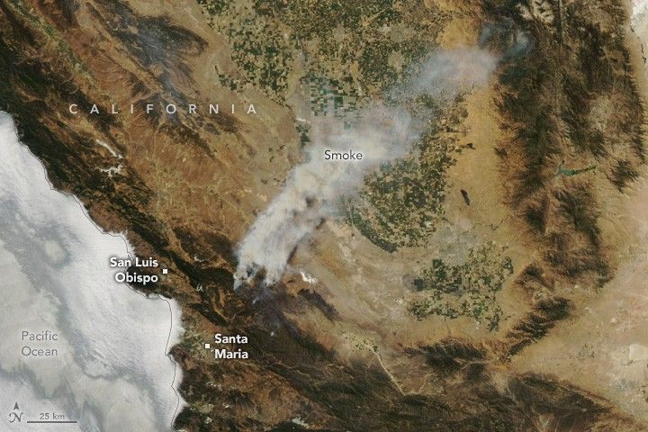

Sprawling Gifford Fire Scorches California
Destructive wildland fires can happen in California at any time of the year, but in the southern part of the state, activity typically peaks between May and October. As of August 11, 2025, the California Department of Forestry and Fire Protection (Cal Fire) reported that more than 5,362 fires had burned more than 374,000 acres (151,000 hectares) since the beginning of the year, more than the five-year average for that date, which is 4,931 fires and 302,509 acres burned.
One large blaze northwest of Santa Barbara, the Gifford fire, accounted for nearly a third of the state’s burned area so far in 2025. The fire ignited on August 1 and spread quickly due to dry and gusty conditions, charring more than 119,214 acres by August 11—large enough to be considered a megafire as defined by the National Interagency Fire Center.
The blaze spread rapidly through dried grasses and brush in the mountainous terrain in Los Padres National Forest, where it has damaged two structures. As of August 11, evacuation orders and warnings were in place for hundreds near the fire’s perimeter, including people living in communities east of Santa Maria and San Luis Obispo.
The MODIS (Moderate Resolution Imaging Spectroradiometer) on NASA’s Aqua satellite captured this image of a long stream of smoke extending from the fire and over California’s Central Valley on August 8, 2025. The photograph below, originally shared by Los Padres National Forest, shows a tall plume of smoke rising from the fire on August 9.
A photograph taken from the ground features a towering cloud of smoke rising from behind a ridge. Much of the smoke plume glows orange in a sign of the active fire burning out of view beneath the ridgeline.
In an August 7 update from the U.S. Forest Service, fire behavior analyst Kevin Montoya explained that the fire had begun progressing through parts of the landscape with thick brush that had not burned in decades, making it easier for it to burn vigorously and race up hills. An increase in the atmosphere’s mixing height, from about 8,000 feet in the first days of the fire to about 15,000 feet in recent days, has helped the smoke column soar, he added, allowing the fire to suck in more air and leading to more rapid growth.
Despite its size, the Gifford fire has not yet reached the scale of the largest blazes on record in California. The top 20 largest fires in the state all exceed 192,000 acres of burned area. As of August 11, the blaze was 33 percent contained. More than 4,000 personnel continued to fight the fire using dozens of water tenders, dozers, engines, and helicopters, according to Cal Fire.
NASA’s satellite data are part of a global system of observations that are used to track fire behavior and analyze emerging trends. Among the real-time wildfire monitoring tools that NASA makes available are FIRMS (Fire Information for Resource Management System), the Worldview browser, and the Fire Event Explorer.